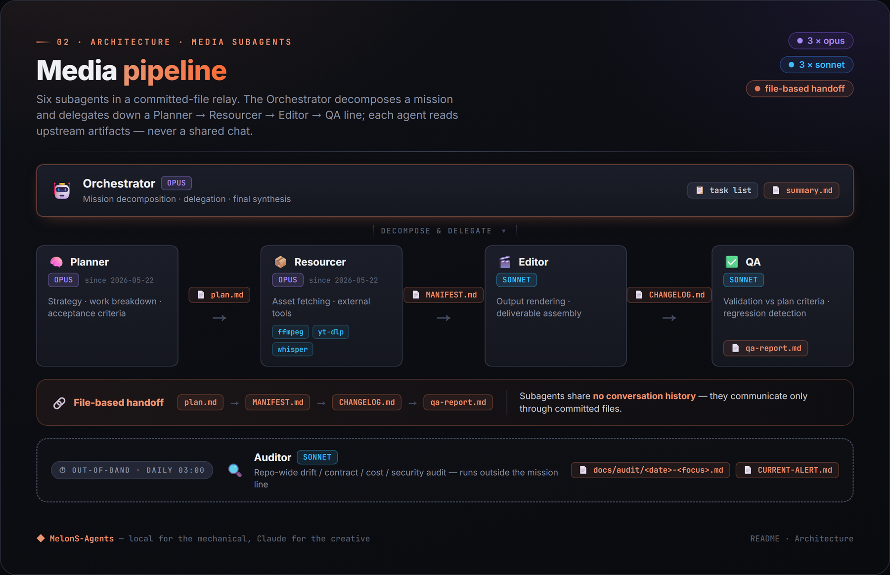
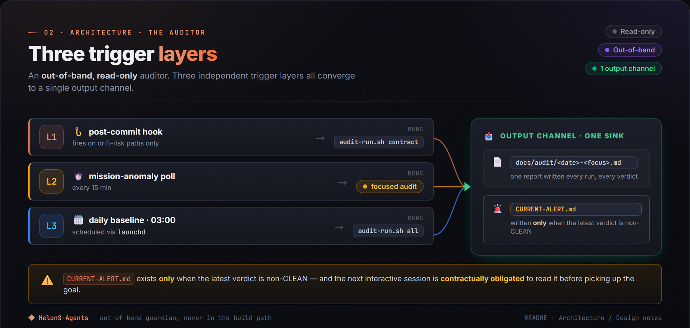

An agent that builds — and verifies — its own game.
PawnSim colony-sim · two media skills · human-in-the-loop ops · $0 runtime · EN + KO
AI-PoweredSelf-EvolvingAutonomous
The active work is PawnSim — a colony-sim vertical slice the agent builds and play-tests in a tight loop, where the headline isn't features but verification: code existing ≠ verified working. Two production media skills ship alongside, every mechanical stage stays local at $0 runtime cost, and the repo audits itself on every commit.
Every commit is gated by a 15-scenario input-level repro test — synthesized clicks through the player's own UI path, asserting the effect, not just that the click landed.
Long unattended soaks are judged by an isolated grader sub-agent against a written rubric — it sees only evidence (screenshots + raw logs), never the author's intent.
Two media skills: music-video (a track → a 9:16 short with phrase-aware cuts + 23 vintage shaders) and job-hunt (one seed keyword → a deduplicated Korean job-board digest).
Mechanical stages stay local (Unity batchmode, aubio, whisper.cpp, ffmpeg); creative stages opt into Claude under the operator's existing subscription.
Unattended 16 in-game-day colony soak — agent-built and agent-verified. The loop shown (stockpile → housing → farming → logging → mining) is gated by the 15-scenario input-level repro test and confirmed by isolated-grader rubric verdicts, not the author's claims.
The most active surface right now is PawnSim, a top-down colony-sim vertical slice (Unity 6000.0.75f1 LTS). Every sprite (a full 32px art generation — 3-direction walk/work pawn sheets, animals, terrain, furniture, all procedurally generated), every scene, and every C# system is CLI-scaffolded by the game-dev-agent meta-skill with no manual Unity Editor work — the whole .exe is reproducible from the command line. Colonists chop / mine / farm / cook / haul / build / research / fight under a utility-AI; an AI Director schedules raids on a jittered clock; the player drafts pawns and paints build + designation orders.
The two verification gates — README · PawnSim verification
The headline is verification, not features
The north star is "code existing ≠ verified working." Two layers carry it:
15-scenario input-level repro gate — on every commit, real synthesized clicks run through the same UI path a player uses, with effect assertions: "the click placed the designation," "the wall got built," "only the selected tree was chopped" — not just "the click landed."
Isolated-grader soak loop — long unattended soaks are judged by a separate sub-agent against a written rubric. The grader sees only evidence (screenshots + raw logs), never the author's intent, which blocks author self-grading bias.
A failing gate means no advance: fix-in-place or roll back. The basic colony loop (stockpile → housing with real indoor effects → permanent farm plots → logging → mining → deconstruct) is machine-verified end-to-end, with the grader verdicts committed alongside the fixes.
What the grader caught that self-review missed
The verdicts repeatedly surfaced defects the author's own review passed over — the honest proof the loop is worth its cost:
A silent harness blind spot that had voided every designation in earlier soaks (the verifier itself was broken — "the verifier must be verified too").
A "food-rich colony starving to death" mood-gate trap.
A permanent-mental-break colony freeze.
Honestly tracked open gaps remain — some save/load entity sub-state isn't serialized yet, and the mood economy still runs a slight deficit (the one acknowledged open gameplay problem). Full honest verification status in skills/game-prototype/README.md.
Human-in-the-loop ops
The agent doesn't run open-loop. The operator plays the build, files in-game feedback, and that feedback becomes the next batch of gated fixes — an operator → agent → verify → operator cycle. Logic changes (pawn behaviour, balance) are explicitly operator-gated: the agent drafts the spec and waits for an OK before touching them.
This is the same human-in-the-loop pattern the repo applies to its media missions: the agent does all the mechanical work, the human owns taste, money, and logic approval.
Night cycle three bed tiers · sleep state · night-tint lighting
The meta-skill that scaffolds it: skills/game-dev-agent/. PawnSim is Unity / Windows-primary (the build chain runs the Editor in batchmode); the rest of the repo is macOS / Linux.
Audience · who this is for
Who this is for
You want to see an agent verify the game it builds — not just build it. PawnSim ships with a 15-scenario input-level repro gate on every commit and an isolated-grader rubric loop for long soaks; the graders' verdicts (not the author's claims) are the acceptance record, committed alongside the fixes.
You want short-form vertical video output without writing pipeline code. Give the wizard a music file, get back a 9:16 short with beat-aligned cuts and vintage shaders. No Premiere, no After Effects, no GUI.
You want to study a working multi-agent system that doesn't pretend to be magic. Every commit is one observable step in how the system evolves; docs/audit/ records every drift the auditor catches; the quality + autonomy charts below chart whether those claims hold up over time.
You want a Korean job-board digest that respects how you actually search. Pass --seed "Problem Solver"; the skill expands to the 26 equivalent titles companies use (FDE / Applied AI Engineer / Generalist / Founding Engineer / …) before fetching from 11 sources.
You want an agentskills.io-compliant Skill you can drop into other runtimes. Both skills work in Claude Code, Cursor, Goose, Gemini CLI, OpenAI Codex, GitHub Copilot, and ~38 other listed compatible runtimes.
If you want a SaaS that hides the pipeline, this isn't it. If you want every step as inspectable bash + open-source local tools (ffmpeg / whisper.cpp / ollama / aubio), it is.
Architecture · how it works
How it works
The scaffold is general-purpose — it doesn't force every skill through one shape. Short-form video was the v1 domain (the deliverable is visually verifiable and failure modes are quick to catch); the current development focus is the game track (the PawnSim build-and-verify loop above), driven by a game-dev-agent meta-skill. Two production media skills ship today: the music-video mission and the standalone job-hunt skill. Earlier missions (faceless-short narration, v1 highlight / shorts-batch) remain in the tree as alternate paths.
The system at a glance — README · OverviewOne invocation, three pipeline shapes — README · Architecture
— Game track · the current focus
game-dev-agent (meta-skill, Skill #3)
A Unity-focused agent that CLI-scaffolds a whole game with no manual Editor work: sprite generation (32px procedural art), C# system scaffolding, scene + prefab generation via Unity batchmode, balance tuning, audio generation, and an in-game AI Director. It drives four prototype skills that double as its empirical validation surface — PawnSim (colony-sim flagship), plus a 2D physics-merge puzzle, a wave-survival action game, and a sliding-tile number puzzle — each built faster than the last, testing the "compounding speedup" hypothesis.
The game track runs a separate roster of 13 game-domain sub-agents (director / designer / programmer / build-engineer / QA / artist / sound / narrative / specialists) on top of the 6 core media-pipeline agents — 19 agent definitions total in .claude/agents/.
— Media pipeline · music-video mission

-.md and CURRENT-ALERT.md." loading="lazy" decoding="async">
Six subagents, file-based handoff — README · Architecture
Pipeline (music-video mission)
Beat extraction.aubiotrack finds real beats; sub-beat noise rejected. Cuts land every Nth beat (default 12 — about one cut per 7.5 s at 95 BPM).
Phrase alignment.aubioonset detects drum hits. Variable per-clip setpts by mood: slow scenes 0.55×, ambient 0.70×, active 0.80×, natural 1.00× — the music drives the visual pace.
B-roll. Mood-keyword Pexels Videos API fetch; per-window selection. Demo mode bundles CC-BY Blender open-movie clips for zero-key first-touch.
Glitch micro-edits. 0.2 s reverse + 0.2 s forward jump-cut on detected drum onsets, but only on clips classified as static-camera so the frame doesn't shake during the glitch.
Vintage lo-fi shaders. Film grain + vignette + Gaussian zoom-pulse + phrase-aware pond ripple + halation bloom. All pure ffmpeg filter graphs — no GLSL, no external renderer.
Render + QA. ffmpeg 9:16 screen-fill, mission-level retry on failure.
Quality bar — 5 contracts the system now enforces
The 2026-05-22 music-video QA pass surfaced six taste directives that the prior pipeline produced quietly broken output against. Five landed as enforced contracts; the sixth is open as a research direction. Case study #9 writes the framing: the bug wasn't the renders, it was that the contracts weren't expressible in code.
All pure ffmpeg filter graphs. No GLSL, no external renderer. Catalog in scripts/music-video-shaders.sh; per-genre routing in skills/music-video/data/genre-presets.yaml.
Stage 1 — first pass (2026-05-17).pond, halation, breathing, combo.
Deliberately deferred — cel-shading / cartoon (needs GLSL / EbSynth / AI stylization). See case study #5.
— Audit & cost · the self-watching repo

-.md; CURRENT-ALERT.md is written only when the latest verdict is non-CLEAN, and the next interactive session is contractually obligated to read it before picking up the goal." loading="lazy" decoding="async">
Three trigger layers, one output sink — README · Architecture / Design notes
Three-layer reactive audit
L1 — post-commit hook. Drift-risk commits (anything under agents/, .claude/agents/, config/, CLAUDE.md, the operator contract) fire audit-run.sh contract within ~30 s.
L2 — 15-min mission-anomaly poll. New blocker files or QA-FAIL bursts trigger a focused audit. No-op (zero tokens) when nothing's wrong.
L3 — daily 03:00 baseline. launchd fires the full sweep. Catches anything L1 + L2 missed.
The pattern is Reactor + Hook (files as events), not Observer — subagents in this repo aren't long-running observables.
Cost-routing rule
The architectural lesson from a real failure: applying "Tier 2 (local) = default" to every pipeline stage produces a quality ceiling.
Mechanical, high-volume stages (transcribe, render, fetch, beat-detect) — local. Token cost would be ruinous at scale.
One-shot creative stages (script hook, factual framing, mood-keyword extraction) — Claude. ~500 tokens per call, operationally negligible against the existing subscription quota, and quality compounds over the next 60 seconds of viewing.
Pipelines are packaged as portable Skills following the open agentskills.io standard — a skill written once can target multiple compatible runtimes (Claude Code, Cursor, Goose, Gemini CLI, OpenAI Codex, GitHub Copilot, etc.).
Skill #2 — job-hunt, in depth
A separate-shape skill: standalone (no missions-routed pipeline), v2 short-keyword UX, agentskills.io-compliant. Pass --seed "Problem Solver" and the orchestrator expands to a 26-synonym role family (Forward Deployed Engineer / Applied AI Engineer / Generalist / Founding Engineer / …) before fetching from KR job boards (사람인 / 잡코리아 / 원티드 / 프로그래머스). A live run de-dups 5,000+ raw postings down to ~200 matches.
11 source plugins (5 live-ready without a key, 2 key-gated, 4 mock-fallback) — all mock-fallback by default; live HTTP per-plugin behind JH_SOURCE_LIVE=1.
The earlier faceless-short mission still lives in the tree. Topic prompt in, narrated 60-second short out: Sonnet drafts the hook + factual framing, Kokoro-ONNX (English) or macOS Yuna (Korean) synthesizes voice, whisper.cpp transcribes for caption timing, Pexels B-roll selected per-window from caption keywords, ffmpeg burns single-line captions. Preserved for topic-driven content; not the current production format.
outputs/review-queue/ + 3 scripts — batched taste-decision queue. Operator drains a contact-sheet markdown on their cadence, ~10× fewer intervention events.
A meta-skill, goal-lock, parses docs/goal.md and reports unchecked deliverable subgoals so long autonomous sessions can re-anchor. Full per-tool table: docs/operator-tooling.md.
Evidence · what it produces
Evidence — what the pipeline actually produces
Frames captured from rendered mp4s. Full mp4s live under records/missions/ (gitignored — each ~ 25–50 MB).
music-video noir-detective — 2026-05-22 batch, t = 30 s. Per-genre grade_profile (rnb_low_key) shapes the pink-magenta low-key look; phrase-aware shader stack on top.
Genre catalog at a glance — six of the seven grade profiles
Mid-climax frames from the 2026-05-20 → 2026-05-23 production batch. No cherry-picked B-roll — every clip came from the same unattended Pexels mood-keyword fetch the pipeline always runs. The visual identity is the grade_profile + shader stack, not the source footage. Seven grade profiles compiled to ffmpeg filter graphs via scripts/music-video-grade.sh (six shown below); 19 genre presets in skills/music-video/data/genre-presets.yaml.
Same stock in, genre-coded look out — README · Genre catalog
Single seed keyword in, deduplicated markdown digest out. The mock-fallback rendering below comes from docs/samples/job-hunt-digest-mock.md — exercised against all five default sources, 26-synonym problem-solver family expansion, 7/21 raw postings matched. Real digests land under records/jobs/<date>/digest.md (gitignored).
# Job-hunt digest — 2026-05-20
> Seed: Problem Solver → role family problem-solver
> (26 synonym keywords expanded)
> Sources: _mock, kr-wanted, kr-programmers, kr-jobkorea, kr-saramin
> Total postings: 7 — 0 new since last digest
### _mock (3)
- Problem Solver (AI Agent) · MockRebeatLike
지역: 서울 강남구 · 게시: 2026-05-20
요약: 쇼핑 AI Agent 기획+개발+배포까지 직접 담당. PMF 탐색 사이클 주도.
- Forward Deployed Engineer · MockFrontierAI
지역: 원격 · 게시: 2026-05-20
요약: Build AI agent solutions; framing problems → shipping LLM
prototypes within weeks.
- Generalist · MockKRStartup
지역: 서울 마포구 · 게시: 2026-05-19
요약: PM+Engineer+Data Analyst 하이브리드. Ship MVPs, iterate to PMF.
### kr-wanted (1) · kr-programmers (1) · kr-jobkorea (1) · kr-saramin (1)
…
Frames from the earlier faceless-short trials, retained as visual evidence of the narration-era pipeline that preceded the music-video pivot.
Hittites ENHydrogen ENAutoTune ENHittites KO
Faceless-era scorecard historical
Self-evaluation across five retention-mapping axes (Hook, Visual sync, Readability, Factual coherence, Production polish), assigned by Claude during the faceless-short iteration — preserved as the structured progress signal from the v4 → v5 → v6 sequence that preceded the music-video pivot. The music-video mission uses platform watch-time data instead of per-dimension scoring; per-video metrics live under docs/pilots/.
Operator-intervention trend (autonomy signal)
A multi-agent system that needs constant human steering hasn't actually replaced the work it was meant to. Two-panel honest signal updated daily 02:00 KST — Panel A from git log (commit attribution + leverage ratio), Panel B from local Claude Code session JSONLs (operator prompt count + active session minutes). See case study #8 for the 5 prioritized reduction levers acting on the trend.
Historical (render-era) chart, last refreshed 2026-05-25. Since 2026-06 the active development focus shifted to the PawnSim game track, whose work shows up as verification-gated commits (see the autonomy trend above) rather than render missions — so this chart is no longer the current signal and is kept as a record of the render era, the same way the scorecard above is framed. It reads the system's render evolution at a glance: the 2026-05-17 spike (8 → 33 missions/day) is the faceless-pilot batch; the post-pivot flat band is the music-video format at a sustainable 3–8 renders/day cadence. Every records/missions/<date>/<id>/qa-report.md was parsed for Verdict: PASS|FAIL and attempt N of M.
Single-command guided wizard. No Pexels signup, no Suno round-trip, no .env edit:
git clone --depth 1 https://github.com/MelonS/MelonS-Agents.git
cd MelonS-Agents
./scripts/first-touch.sh # checks prereqs, fetches cache, renders, opens result
The wizard checks prerequisites, fetches the demo cache (~30 s), renders a 60-second 9:16 short from bundled CC-BY Blender clips + Kevin MacLeod tracks (~100 s), and opens the result. Single Y/n; rest is automatic.
Skill #2 — job-hunt short-keyword demo (~5 s, no network)
skills/job-hunt/scripts/run.sh --seed "Problem Solver" --dry-run
# digest.md printed on stdout; mock-fallback postings spanning multiple
# sources, all matched against the 26-synonym "problem-solver" family.
Live HTTP per source (5 plugins require no API key): JH_GLOBAL_ATS_LIVE=1 JH_GLOBAL_REMOTEOK_LIVE=1 JH_GLOBAL_REMOTIVE_LIVE=1 JH_GLOBAL_HN_LIVE=1 JH_WORKNET_LIVE=1.
Full Pexels + Suno path (mood-keyword catalog, custom tracks) documented as the advanced path in the README Quick start. macOS first; Linux compatible for the core pipeline (whisper.cpp + ollama + ffmpeg + aubio), macOS-only for launchd schedulers and Yuna TTS.
![Two verification gates diagram. Gate 1 — Input-level repro gate, fires on every commit, 15 scenarios: synthesized clicks drive the same UI path a player uses, with effect assertions ('the click placed a designation', not just 'the click landed'). Gate 2 — Isolated grader sub-agent, judges long soaks against a written rubric and sees only screenshots and raw logs, never the author's intent. Below: three bugs the grader caught that self-review missed (a silent harness blind spot that voided every designation, a food-rich colony starving to death, a permanent mental-break freeze), and the basic colony loop now machine-verified end-to-end: stockpile → housing → farm plots → logging → mining → deconstruct.](assets/visuals/14-verification-loop.png)

![The 3-shape skill model: one skill invocation fans into three pipeline shapes, chosen by where the real work lives. Shape A (Missions-routed, primary) — a 5-agent orchestrator-driven pipeline (Orchestrator/Planner/Resourcer on Opus, Editor/QA on Sonnet) with plan.md / MANIFEST.md / qa-report.md file handoffs; example skills/music-video. Shape B (Standalone) — the skill is the implementation: HTTP → parse → format → render, skipping orchestrator and plan files; example skills/job-hunt is all curl + jq. Shape ? (open) — future skills decide per-skill via SKILL.md metadata.pipeline-source.](assets/visuals/05-three-shapes.png)
![Skills portfolio: two production media skills, one Unity meta-skill in development, one parked experiment — each card shows what it takes in and ships out. music-video (Production): music file → 60-second 9:16 vertical short; 23 ffmpeg shaders, 7 grade profiles, 19 genre presets, cuts on aubiotrack beats, glitch on aubioonset drum hits, Shape A 5-agent missions pipeline. job-hunt (Production): one seed keyword → deduped markdown digest; seed → 26-synonym role family, 11 source plugins, 5 live no-key / 2 key-gated / 4 mock, 5,000+ raw → ~200 matches, Shape B standalone curl+jq. game-dev-agent (In development): Unity meta-skill — sprite gen, C# scaffolding, balance tuning, audio gen, in-game AI director; validation surface = PawnSim colony-sim, 13-agent game roster, CLI-scaffolded with zero manual Unity Editor work. product-cf (Parked): one product photo → CF-style 9:16 short; parked on an honest negative finding — free/local 3D didn't clear the quality bar on a 16GB machine, needs paid cloud image-to-video or a bigger GPU.](assets/visuals/02-skills.png)

![Genre catalog: each per-genre grade_profile recolors the same generic Pexels stock into a genre-coded look before the shader layer — no cherry-picked B-roll. Six profiles shown: noir-detective (rnb_low_key, deep magenta low-key), rain-lofi (lofi_warm_grain, soft warm grain), arcade-synthwave (city_pop_neon, purple → cyan neon), coastline-summer (hollywood_teal_orange, teal → orange split), linen-minimal (kr_warm_pastel, warm peach pastel), smallhand-folk (kinetic lyric overlay, Korean lyric overlay). 19 genre presets, 7 grade profiles (the 7th is a neutral ungraded passthrough). Identity is the grade + shader stack.](assets/visuals/13-genre-catalog.png)